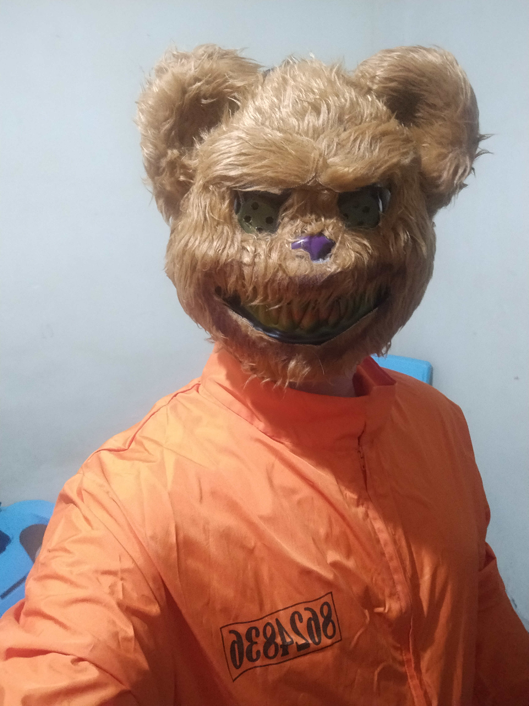

Príncipe de Dinamarca, y desde que mi padre murió todo se torció. Mi madre se casó demasiado rápido con mi tío Claudio, quien ahora ocupa el trono que no le pertenece. El espectro de mi padre se me apareció y me reveló la verdad: Claudio lo asesinó, y yo debía vengarlo. Desde entonces, vivo atrapado entre la duda y la acción, fingiendo locura mientras intento confirmar su culpa. En medio de mi confusión, maté por error a Polonio, lo que arrastró a Ofelia, a quien amaba, hacia la locura y la muerte. Su hermano Laertes juró vengarse, y Claudio aprovechó para tenderme una trampa mortal. Todo terminó en un duelo envenenado donde cayeron uno a uno: Laertes, mi madre, Claudio… y finalmente yo. Pero antes de morir, cumplí con mi deber: vengué a mi padre, aunque el precio fue la destrucción de todos los que me rodeaban… y de mí mismo.